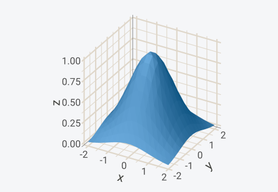

A backend turns scene geometry into drawing commands or pixels. This article shows how to select one and save its output. Installation is covered in Get started.
Choose rendering with
backend_3d().Save the resulting plot with
ggsave().
Example
The data describe a curved surface on a regular grid. The same layers and camera can be rendered with the vector, raster or hybrid backend.
d <- expand.grid(x = seq(-2, 2, length.out = 16),
y = seq(-2, 2, length.out = 16))
d$z <- with(d, exp(-(x^2 + y^2) / 2))
p <- ggplot(d, aes(x, y, z = z)) + geom_surface_3d(fill = "#2E6F9E")Vector rendering
Vector rendering draws paths, filled faces and text with R’s grid graphics system. Use it for scalable figures and geometry that will be edited in a vector graphics application. A device must support the clipping paths required by partial visibility masks.
vector_plot <- p + coord_3d(backend = backend_3d("vector"))
vector_plot
The backend describes scene rendering; the file extension selects the output device. A vector scene saved to PNG is rasterized by that device. Save to PDF or SVG to retain vector geometry.
The standard R PDF device also draws the vector scene directly. Open the device, print the plot and close the device to finish the file. Smooth shading and textures can embed images within the vector output.
Raster rendering
Raster rendering samples the scene into pixels. Use it for dense surfaces or an image whose final dimensions are known. Resolution is measured in dots per inch, abbreviated dpi. The antialias factor increases the sampling resolution before reducing the image to its output size.
raster_plot <- p + coord_3d(backend = backend_3d("raster", dpi = 144,
antialias = 2))
raster_plotThe scene raster resolution and the saved PNG resolution are separate settings. Set both for the intended physical size. Increasing either raster dpi or the antialias factor increases memory use.
Axes and labels are composed through grid around the raster scene. A PDF containing this plot includes the raster image at its chosen resolution.
Hybrid rendering
A hybrid panel renders layers marked with raster = TRUE
into an image and keeps the other layers as vector geometry. Use this to
combine a sampled surface with editable contour paths. The shared depth
test clips vector geometry wherever opaque raster coverage lies in front
of it.
ggplot(d, aes(x, y, z = z)) +
geom_surface_3d(fill = "#2E6F9E", raster = TRUE) +
geom_contour_3d(colour = "black", linewidth = 0.5, bins = 4) +
coord_3d(backend = backend_3d("hybrid", dpi = 100, antialias = 1))Traced fields and lighting
Traced signed distance surfaces and scalar volumes become image layers in raster, vector and hybrid panels. Ray marching and volumes shows their depth compositing and the native seeded path tracer. The path tracer samples diffuse light transport across meshes and traced surfaces, with vector axes and text around the image.
The intrinsic ray-marching backend places an observer inside a geometry. Inside the Thurston geometries explains its observer and orientation controls.
Choosing output
| Task | Backend | File |
|---|---|---|
| Edit paths and faces | Vector | PDF or SVG |
| Scale a modest scene for print | Vector | PDF or SVG |
| Export a dense scene at a fixed size | Raster | PNG or PDF |
| Keep contours editable over a dense surface | Hybrid | PDF or SVG |
| Diffuse interreflection and soft shadows | Pathtrace | PNG or PDF |
| Insert a figure into a slide | Either | PNG, PDF or SVG as supported |
Visibility is resolved across each panel’s layers. Visibility explains the geometric ordering used for vector output and the role of finite stroke width.
Exporting plots and scenes covers editable semantic SVG, code for typesetting and model files for 3D software. Interactive viewing shows orbit controls, picking and linked selection in a browser.